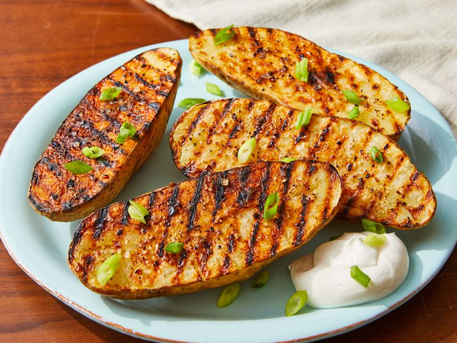

Potatoes

Recipe
A simple and delicious recipe for cooking grilled potatoes. Perfect as a snack of as a side dish to a larger meal.
Ingridents
- 2 large russet potatoes, scrubbed
- 2 tablespoons olive oil
- Salt and ground black pepper to taste
Steps
- Poke the potatoes and microwave for five minutes.
- Slice each potato, then microwave for two more minutes.
- Brush the potato halves with oil, season, and grill until crispy